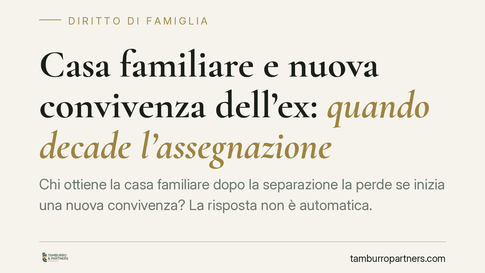

Casa familiare e nuova convivenza dell'ex: quando decade l'assegnazione
Chi ottiene la casa familiare dopo la separazione la perde se inizia una nuova convivenza? La risposta non è automatica. Ciò che conta è dove si trova realmente il centro di vita del figlio: la casa segue il minore, non i sentimenti del genitore. Vediamo la distinzione decisiva tra due scenari molto diversi.

Il principio: l'assegnazione tutela il figlio, non il coniuge
L'assegnazione della casa familiare è disciplinata dall'art. 337-sexies del codice civile. La norma è chiara su un punto: il giudice assegna il godimento della casa tenendo prioritariamente conto dell'interesse dei figli. L'assegnazione non è un beneficio economico riconosciuto al genitore per sé, ma uno strumento pensato per garantire al minore la conservazione dell'ambiente domestico in cui è cresciuto.
Da qui discende la logica di tutte le vicende successive: finché la casa serve a proteggere la stabilità del figlio, l'assegnazione resta. Quando questa funzione viene meno, il diritto si estingue.
Nuova convivenza: nessuna decadenza automatica
Lo stesso art. 337-sexies prevede che il diritto al godimento viene meno nel caso in cui l'assegnatario non abiti o cessi di abitare stabilmente nella casa familiare, oppure conviva more uxorio o contragga nuovo matrimonio.
Attenzione, però: la formulazione della norma è stata letta in chiave costituzionalmente orientata. La giurisprudenza ha escluso ogni automatismo. La sola nuova convivenza o il nuovo matrimonio non fanno decadere di per sé l'assegnazione. Il giudice deve sempre verificare in concreto se la revoca sia compatibile con l'interesse del minore. Diversamente, si finirebbe per sacrificare il figlio per punire una scelta affettiva del genitore.
È un principio consolidato nella giurisprudenza di legittimità: la decadenza non opera in modo meccanico, ma richiede una valutazione caso per caso incentrata sul benessere del figlio.
I due scenari da distinguere
La differenza pratica è netta e conviene tenerla a mente.
Scenario A – Il nuovo partner entra nella casa familiare. L'ex coniuge assegnatario continua a vivere con il figlio nell'immobile assegnato e vi accoglie il nuovo compagno o la nuova compagna. Qui, in linea di principio, l'assegnazione non decade automaticamente: il centro di vita del minore resta lo stesso. Il giudice valuterà se e come la nuova situazione incida sull'interesse del figlio, ma non c'è abbandono dell'abitazione.
Scenario B – Il genitore si trasferisce con il figlio dal nuovo partner. L'assegnatario lascia stabilmente la casa familiare e sposta altrove, presso l'abitazione del nuovo convivente, il centro della vita quotidiana del minore. In questo caso la casa familiare non svolge più la sua funzione: il figlio non vi abita più. Viene quindi a mancare il presupposto stesso dell'assegnazione, che può essere revocata su richiesta del proprietario o dell'altro genitore.
È questa la chiave di lettura corretta: non conta l'esistenza di una nuova relazione, ma il trasferimento effettivo del figlio fuori dall'immobile.
Residenza effettiva contro residenza anagrafica
Un punto spesso frainteso. Ciò che rileva non è la residenza anagrafica risultante dai registri comunali, ma l'abitazione effettiva. Si può mantenere formalmente la residenza nella casa assegnata pur vivendo altrove: la giurisprudenza guarda alla realtà dei fatti, non alle carte.
Sul piano probatorio, chi chiede la revoca (in genere il proprietario dell'immobile o l'altro genitore) ha l'onere di dimostrare che l'assegnatario ha stabilmente lasciato la casa e trasferito altrove il centro di vita del minore. Non basta un'allegazione generica: servono elementi concreti e verificabili.
Cosa fare in concreto
- Distingui la tua situazione. Verifica se il nuovo partner si è aggiunto nella casa familiare o se invece stai spostando altrove la vita quotidiana del figlio: le conseguenze sono opposte.
- Ragiona sull'interesse del minore. Ogni decisione sull'abitazione va misurata sulla stabilità del figlio, non sulle esigenze del genitore. È questo il criterio che il giudice applicherà.
- Non fare affidamento sulla sola residenza anagrafica. Mantenere la residenza formale nella casa assegnata non protegge il diritto se di fatto si abita altrove.
- Documenta la situazione. Se sei proprietario e ritieni che l'immobile sia stato abbandonato, raccogli elementi concreti prima di agire; se sei assegnatario, conserva prova dell'effettiva permanenza del figlio.
- Fatti assistere prima di agire. Consigliamo di valutare con un legale la posizione specifica prima di avviare o resistere a un procedimento di revoca: l'esito dipende dai fatti concreti e dalla loro dimostrazione.
La regola di fondo resta una sola: la casa familiare segue il figlio. Finché il minore vi abita, il diritto tiene; quando il centro della sua vita si sposta altrove, il presupposto dell'assegnazione si dissolve.
Ogni famiglia ha il suo equilibrio.
Separazione, divorzio, affidamento, assegno: se vuoi un confronto riservato su una specifica situazione, scrivi allo studio. Ti rispondiamo entro un giorno lavorativo.